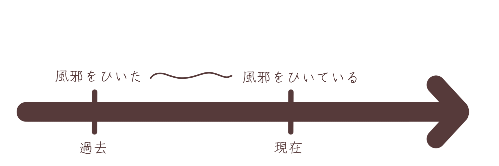
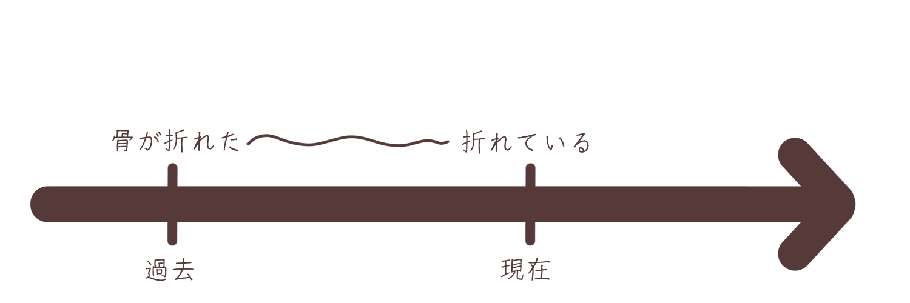
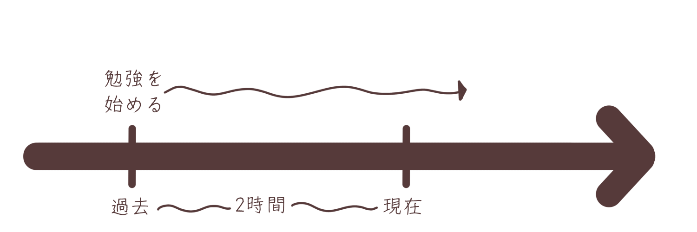
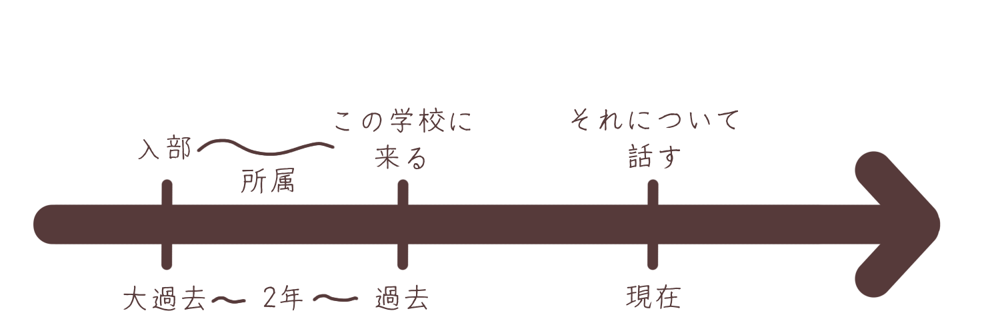
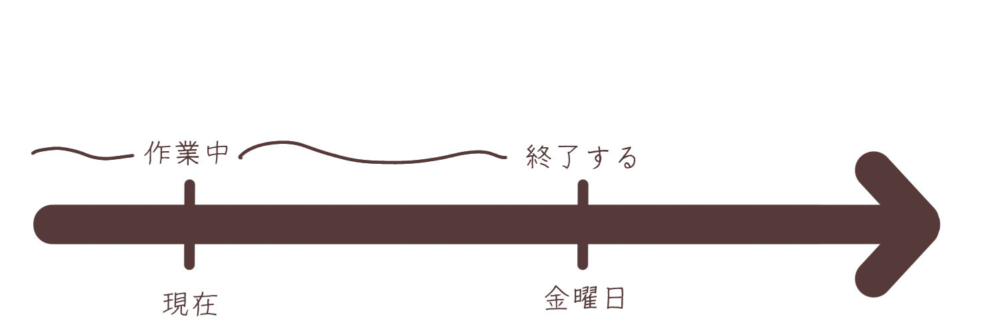

ここでは文法についてやっていきます
トップページQ.受動態とは？
A.誰かが何かを「される」表現のこと。be＋過去分詞
誰がその行動をしたのか示さないことが多い。
My bag was stolen. ⇐誰が盗んだのかわからない、言う必要がない
あえて誰がしたのか言いたいときはbyを使う。
受動態の時制はbe動詞で表す
◇「誰によってそうなったか」はbyだけど、行為者がいないときはinとかwithとかtoを動詞、名詞にあわせて使い分ける。
A lot of people were killed in the war.
The train was packed with commuters.
◇疑問文（Yes/No）⇒be＋主語＋過去分詞
◇疑問文（5W1H）⇒使う疑問詞のルールに従う。たしか疑問副詞とか疑問代名詞とかの違いだったような気がする
たまに、beのかわりにgetを使うときがある。
get hurt, get trapped, get caughtなど
完了形とは！「その時点での状態」を表すものなのです！
ややこいのでイラスト付きで解説します


現在完了（経験）
I have watched this movie twice
現在完了進行形 have been ~ing
I have been studying for two hours.

※「～が終わったら・・・するよ」は、未来のことだけど仮定なので現在完了を使う。
When I've finished lunch, I'll call you.
※過去完了を使う文は「ある時点での状態」を表すので、「過去のどの時点での話か」をはっきりさせる必要がある。
つまり、上の例文の'When I called William'にあたる情報を書かなあかんのです。
だいたい過去形の文で表されるけど、until＋名詞とかもある。until the test⇒そのテストまでは
過去完了（経験）
I didn't go to that movie because I had seen it befor.
過去完了（継続）
I had been in a soccer club for two years befor I came to this school.

過去完了（ただの大過去）
これは状態ではなく、単純に「これ過去形のやつより前のことやねん」て言いたいときに使う過去完了。
The teacher found that all his students had solved the math problem.

※いつ始まるかはわかんない。
過去完了と同じく'by next Friday'に該当する情報が必要。未来完了では仮定の場合がある。
未来完了（経験）
I'll have visited the university three times if I join the campus tour.
未来完了（継続）
Mr.Charles will have been at this school for ten years next month.
進行形とは！今やってることとかを表す文法表現であります
・今やってる最中のこと
They're playing tennis.
・一時的な状態、変化の途中
I think my cat is getting fat.
・予定
My grandmother is visiting us tommorow
・くりかえしの強調（～ばっかやってる）
He's always complaining about something.
過去進行形のときはwas/were＋doing
未来進行形のときはwill be＋doing
「昔よくやってた」⇒used to＋do（原形）
「前やってたけど今とは違う習慣」に使うことが多い。
I used to spend my summer vacation with my cousins.
There used to be a park next my house.
・If、Whenとセットの動詞は基本的に原形
ただし、名詞節のときは例外。
見分け方・・・副詞節（原形）のときは順番かえても大丈夫
Tell me when he is back.（戻ってきたら教えて）⇒〇When he is back, tell me that.
Tell me when he will back.（いつ戻ってくるか教えて）⇒✕When he will back, tell me that.
⇒SVOの目的格なので言い換えられない。
単語は接頭辞と接尾辞でなんとなく推測できるぞ！
接頭辞シリーズ
in/im- ：中に、内側に、反対の
ex- ：外へ
inter- ：相互
co/con/com- ：一緒に
de- ：離れる
dis- ：違う方向
pre/pro- ：前に、先に
sub- ：下の、次の
sur- ：超えている
uni- ：1つの
bi- ：2つの
tri- ：3つの
接尾辞シリーズ
-able/ible ：可能
-al ：～の、～な（形容詞）
-ic ：～的な（形容詞）
-ment ：～すること（名詞）
個人的な英作文の手順
1.まず脳内で書きたいことをまとめる（導入、根拠2～3個、結論）
2.思い浮かんだ日本語を簡単な日本語に翻訳する
「過ごしやすく快適な空間設計のため～」⇒「心地よい空間を作るために～」
3.英語にして書く
英語を書くうえで注意すべきこと
がんばれ
上にもどる